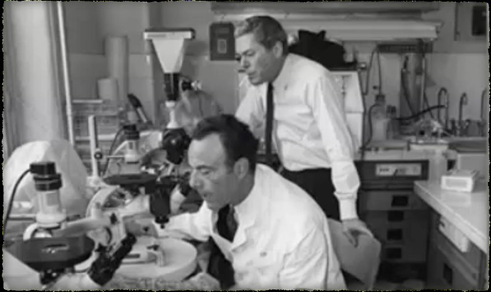
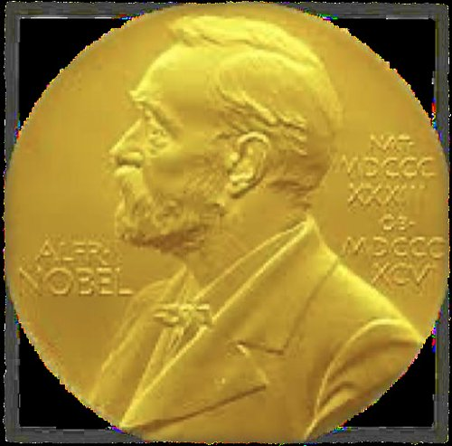
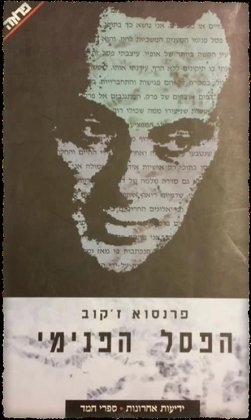
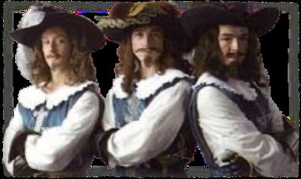

ביולוגיה י״ב · בקרה על ביטוי גנים
אופרון הלקטוז


ז׳אק מונו · פרנסואה ז׳קוב
(ואיתם אנדרה לבוף)
פרס נובל לפיזיולוגיה ולרפואה, 1965
הם גילו את המנגנון הראשון שהיה ידוע של בקרה על ביטוי גנים ברמת התעתוק.

פרנסואה ז׳קוב כתב אוטוביוגרפיה בשם "הפסל הפנימי".
"המפסלת והאזמל, במקרה הזה, הם פגישות והתחברויות."
מחקרם של מונו וז׳קוב היה בסיס לגילוי מנגנוני בקרה נוספים.
ייצור חלבונים צורך ATP, חומצות אמיניות ונוקלאוטידים.
חלבון שנוצר בלי שימוש בא על חשבון ייצור של חלבונים אחרים.
של חלבונים מסוג אחד
בחלבונים אחרים
במסלולי התקשורת בתא
התא לא היה מתפקד כראוי
החוקרים בדקו את חילוף החומרים של סוכרים בחיידק E. coli.
כשבמצע יש גם גלוקוז וגם לקטוז, החיידקים מפרקים קודם את הגלוקוז.
רק כשהגלוקוז אוזל, מתחיל פירוק הלקטוז.
למה? נגלה בהמשך…
הגלוקוז חודר לתא החיידק ומנוצל בתהליך הנשימה התאית:
אין צורך בשום אנזים נוסף: הגלוקוז הוא חד־סוכר, והוא נכנס ישירות לתהליך.
לקטוז (סוכר החלב) הוא דו־סוכר. לפני הנשימה התאית הוא מפורק:
האנזים β־גלקטוזידאז מפרק לקטוז לגלוקוז ולגלקטוז.
דרך חלבון נשא בקרום התא: פרמאז (permease).
כמעט אין ייצור של β־גלקטוזידאז ושל פרמאז.
שאלת המחקר: איך נקבע מתי נוצרים האנזימים לניצול לקטוז?

שלושת המוסקטרים:
שלושה גנים, אזור בקרה אחד
גן Z
מפרק לקטוז לגלוקוז ולגלקטוז
גן Y
חלבון נשא בקרום: לקטוז חודר דרכו לתא
גן A
אנזים שלישי. תפקידו פחות מרכזי
שלושת הגנים נמצאים זה ליד זה ב־DNA ומתועתקים יחד ל־mRNA אחד.
הם מבוקרים על ידי אזור בקרה אחד.
אופרון: קבוצה של גנים מבניים סמוכים, שמתועתקים יחד ומבוקרים על ידי אזור בקרה משותף.
אופרונים נפוצים בפרוקריוטים (חיידקים).
לחצו על המתגים
גן רגיל: אזור בקרה לכל גן
אופרון: אזור בקרה אחד לכמה גנים
| באנלוגיה | באופרון |
|---|---|
| מתג | אזור הבקרה |
| נורה | גן מבני |
| נורה דולקת | הגן מתבטא: נוצר חלבון |
| היד שמדליקה | RNA פולימראז (האנזים המתעתק) |
גנים מבניים: גנים המקודדים לחלבונים. כאן: Z, Y, A. הם מתועתקים יחד ל־mRNA אחד.
אתר מקדם: רצף נוקלאוטידים שאליו נקשר האנזים המתעתק.
RNA פולימראז (האנזים המתעתק): נקשר לאתר המקדם ויוצר mRNA לפי רצף הגנים.
אתר מפעיל: רצף נוקלאוטידים שאליו נקשר החלבון המווסת (הדכאן).
גן מווסת: מקודד לחלבון המווסת, הדכאן. הוא אינו חלק מהאופרון, ויש לו אתר מקדם משלו.
נקבעות לפי פעולת החלבון המווסת:
החלבון המווסת מונע את התעתוק
החלבון המווסת מחזק את קישור האנזים המתעתק לאתר המקדם, והתעתוק מוגבר
באופרון הלקטוז פועלות שתיהן.
הלקטוז משמש משרן. (העשרה: בפועל נקשרת לדכאן נגזרת של לקטוז, אלולקטוז.)
ייצור האנזימים מתרחש רק בזמן שיש לקטוז.
גם כשהדכאן אינו קשור, הקשר בין RNA פולימראז לאתר המקדם של אופרון הלקטוז חלש.
התוצאה: תעתוק בקצב נמוך.
ירידה בריכוז הגלוקוז בתא ← עלייה בריכוז cAMP
לחצו על משבצת מפוספסת לחשיפה
| גלוקוז | לקטוז | הדכאן על האתר המפעיל? | CAP-cAMP קשור? | תעתוק הגנים המבניים |
|---|---|---|---|---|
| יש | אין | קשור | לא | כמעט אין |
| אין | אין | קשור | כן | כמעט אין |
| יש | יש | לא קשור | לא | נמוך |
| אין | יש | לא קשור | כן | גבוה |
עכשיו אפשר להסביר: כשיש גלוקוז ולקטוז, הגלוקוז מנוצל קודם, כי קצב התעתוק של אופרון הלקטוז נמוך.
נשאל בבגרות תשפ״ג (פעמיים)
האנזימים מפרקים לקטוז.
לקטוז נקשר לדכאן ← הדכאן מתנתק ← תעתוק.
לקטוז = משרן
האנזימים מייצרים טריפטופן (חומצה אמינית).
טריפטופן נקשר לדכאן ← הדכאן נקשר לאתר המפעיל ← אין תעתוק.
טריפטופן אינו משרן
הרבה טריפטופן בתא ← אין ייצור אנזימים · מעט טריפטופן ← ייצור אנזימים
בגרות, קיץ תשס״ד
בגרות, קיץ תשע״ח, שאלה 31
א. אילו מששת הקטעים מקודדים ליצירת חלבונים?
קטעים 1, 4, 5, 6. קטע 1 הוא הגן המווסת (מקודד לדכאן); קטעים 4–6 הם הגנים המבניים. קטע 2 הוא האתר המקדם וקטע 3 הוא האתר המפעיל: הם אינם מקודדים לחלבון.
בגרות, קיץ תשע״ח, שאלה 31ב
ב. בזן מוטנטי מיוצרים בקביעות אנזימים לפירוק לקטוז, גם בהיעדר לקטוז. באיזה קטע יכולה להיות המוטציה? הסבירו.
קטע 1 (הגן המווסת): לא נוצר דכאן תקין, והוא אינו נקשר לאתר המפעיל. או קטע 3 (האתר המפעיל): השתנה רצף האתר, והדכאן אינו נקשר אליו. בשני המקרים RNA פולימראז מתעתק את הגנים המבניים גם בלי לקטוז.
בגרות, קיץ תשע״ח, שאלה 31ג
על מצע עם לקטוז וגלוקוז גידלו חיידקים עם אופרון לקטוז תקין. עם הזמן ריכוז הגלוקוז ירד.
כיצד תשפיע הירידה על ייצור האנזימים לניצול לקטוז? הסבירו, והתייחסו לדרך השפעת הגלוקוז על האופרון.
ייצור האנזימים יגדל.
בגרות, קיץ תשפ״ב, שאלה 33ב
הוסיפו לקטוז למצע (דקה 3) והוציאו אותו (דקה 10). קבעו איזה עקום מתאר את האנזים ואיזה את ה־mRNA. נמקו לפי הגרף.
a = mRNA: עולה ראשון (תעתוק קודם לתרגום), ויורד מהר אחרי הוצאת הלקטוז: התעתוק נפסק וה־mRNA מתפרק.
b = אנזים: מתחיל לעלות אחרי ה־mRNA (נוצר בתרגום שלו), ונשאר קבוע אחרי הוצאת הלקטוז: לא נוצר אנזים חדש, אך האנזים שכבר נוצר אינו מתפרק מהר.
בגרות, קיץ תשפ״ד, שאלה 33א
| מצע I | מצע II | מצע III | |
|---|---|---|---|
| סוכרים | 100% לקטוז | 100% גלוקוז | 50% לקטוז + 50% גלוקוז |
(1) באיזה מצע מידת התעתוק של הגנים המבניים הגבוהה ביותר, ובאיזה הנמוכה ביותר?
הגבוהה ביותר: מצע I (יש לקטוז ואין גלוקוז). הנמוכה ביותר: מצע II (אין לקטוז, הדכאן קשור לאתר המפעיל).
(2) הסבירו את השפעת היעדר הגלוקוז במצע I. התייחסו לחוזק הקשר בין האנזים המתעתק לאתר המקדם.
אין גלוקוז ← ריכוז cAMP גבוה ← CAP-cAMP נקשר ליד האתר המקדם ← הקשר בין RNA פולימראז לאתר המקדם מתחזק ← מידת התעתוק גבוהה.
בגרות תשע״ו ותשפ״ג (מועד מיוחד)
היחידה מתבססת על חומרי מט״ח ומורחבת בחומרים נוספים. איורים: חגית ברגמן.